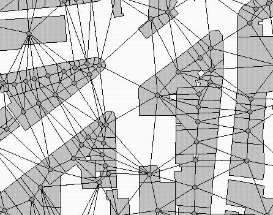
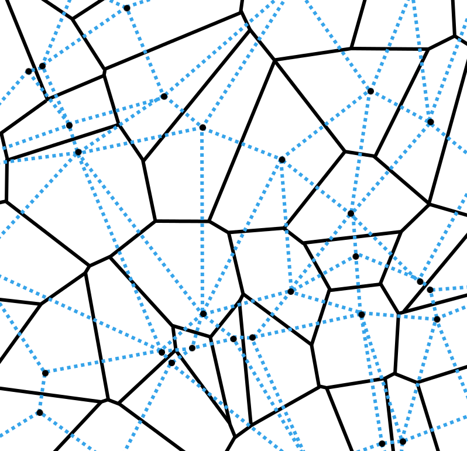
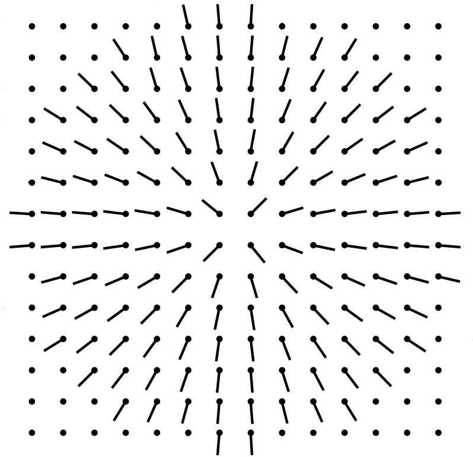
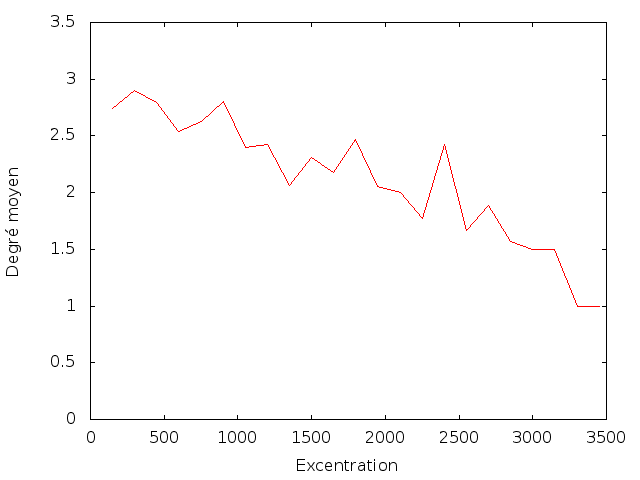

Morphogenèse urbaine
coévolution du réseau viaire et du bâti
Merwan Achibet
Université du Havre
28 juin 2012

Plan
-
État de l'art
- Automates cellulaires
- Systèmes multi-agents
- Méthodes procédurales
-
Le modèle
- Structure
- Potentialité
- Trois mécanismes
-
Démonstration
État de l'art
Automates cellulaires
Principe
Exemple : le jeu de la vie de Conway
Exemple géographique : la ségrégation de Schelling
Dans le cadre des simulations urbaines
Une cellule représente un sous-espace géographique.
Une cellule dispose d'un état.
- Booléen (vide/construit)
- Type d'usage (résidentiel, commercial, industriel,
...)
- Tout type de quantité urbaine
Une cellule dispose d'un voisinage.
- Moore ou Von Neumann
- Rayon
- Visibilité
Exemple cellulaire 1
- Teinte de gris : hauteur des bâtiments
- Quatre facteurs : couverture initiale, inertie,
interaction et bruit
- Une cellule montre si trois seuils sont satisfaits

Lucien Benguigui, Daniel Czalanski et Rafael Roth. "Modeling
cities in 3D: a cellular automaton approach". Dans
: Environment and Planning B: Planning and Design 3
(2004).
Exemple cellulaire 2
- Fonctions de base : EV(C,R), RV(C,R), ZV(C,R)
- Règles composées : Fr > Zp = ZV(Ind,3) • EV(Ctr+Com,2)
Edwige Dubos-Paillard, Yves Guermond et Patrice
Langlois. "Analyse de l'évolution urbaine par automate
cellulaire : le modèle SpaCelle". Dans L'Espace
Géographique 32 (2003).
Premières limitations des automates cellulaires
La rigidité de leur formalisme s'oppose à la fidélité des simulations.
- Discrétisation des états
- Synchronisme temporel
- Homogénéité et régularité
Relaxation de la régularité
Généralisation : automates cellulaires graphes.

David O'Sullivan. "Graph-based Cellular Automaton Models of
Urban Spatial Processes". Thèse de doct. Bartlett School of
Architecture and Planning, University College London, 2000.
Autre limitation : la représentation du réseau viaire
- Le réseau routier est essentiel
- Soit il est totalement ignoré
- Soit il est fourni en entrée et demeure statique
Cellule = représentation adéquate ?
Exemple multi-agent 1
- Agents promoteurs : achètent, vendent, changent le
type
- Agents traceurs : raccordent les parcelles au réseau
routier

Tom Lechner, Seth Tisue et Andy Moddrell, Procedural
Modeling of Urban Land Use. Department of Computer
Science, North Carolina State Université, 2007.
Exemple multi-agent 2
- Réseau viaire temporaire formé par un jeu de règles empiriques
- Bâti créé par subdivision des niches
- Trafic des véhicules et des piétons simulé pour
identifier les meilleures voies

Basil Weber, Pascal Müller, Perter Wonka and Markus
Gross. "Interactive Geometric Simulation of 4D
Cities". Dans Eurographics. 2009.
Manque de cohérence historique
- La configuration de départ est valide
- La configuration d'arrivée est valide
- Les configurations intermédiaires sont erronées


Exemple procédural
- Génération automatique assistée
- Un champ de vecteurs par facteur
- Pente, foyer de densité, bruit, ...


Guoning Chen, Gregory Esch, Peter Wonka, Pascal Müller et
Eugene Zhang. "Interactive Procedural Street Modeling". Dans
: SIGGRAPH '08. 2008.
Le modèle
Objectif du modèle
On propose un modèle de croissance urbaine :
- Reprenant le principe des automates cellulaires
- Gérant l'évolution conjointe du bâti et du viaire
- Reflétant l'irrégularité de la ville
- Garantissant la cohérence temporelle
Une structure adaptée : le diagramme de Voronoï
- Définition
- DEFINITION

Que représente t-on ?
- Cellule → parcelle
- Arête → route
- Sommet → carrefour
Et l'aspect cellulaire ?

La cellule de Voronoï n'est pas la parcelle exacte !

Potentialité
Deux types d'éléments :
- Les construits : définitivement placés, forment la ville
- Les potentiels : intangibles, représentent une prévision
Principe du modèle
On considère la densité de population.
Trois mécanismes
- Évolution des densités
- Placement des éléments potentiels
- Construction des éléments potentiels
Mécanisme 1 : automate cellulaire
Trois types de densité :
- Faible (f)
- Moyenne (m)
- Élevée (e)
Une matrice d'affinité :

Un score de transition :

Application à un automate cellulaire classique
Règle insuffisante
Deux défauts :
Amélioration : prendre en compte l'âge des parcelles.

Nouvel essai
Application à un diagramme de Voronoï
VIDEO
Mécanisme 2: placement des éléments potentiels
- Mécanisme précédent: croissance verticale
- Celui-ci: croissance verticale
Idée principale: guider l'expansion de la ville.
On se concentre sur le placement des parcelles
potentielles.
La dynamique urbaine est axée autour des centres denses de
la ville
- La graine est placée sur un centre
- Elle se déplace en fonction de variables inhérentes à la
ville
- Sa vitesse varie
- Quand elle s'arrête, on place une parcelle
potentielle
ASPECT PHYSIQUE
Configuration étudiée

Champ de répulsion de la densité

Champ d'attraction des routes

Champ de répulsion des obstacles

Combinaison

Vitesse de la graine
Mécanisme 3 : construction des éléments potentiels
routes
parcelles
Démonstration
Le Havre
Configuration initiale : une sous-partie du Havre.
- Le profil côtier restreint la croissance
- Un centre densitaire majeur
- Quelques parcelles peuplées dispersées
titre
VIDEO
Superficie

Superficie par type de densité

Diamètre
Degré des carrefours
Degré des carrefours en fonction de la distance

Constat
Conclusion
Bien
Pas bien
Ouverture
Questions